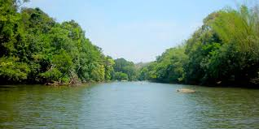

WAYANAD
Wayanad is an Indian district in the north-east of Kerala state
with administrative headquarters at the municipality of Kalpetta. It is set high on the
Western Ghats with altitudes ranging from 700 to 2100 meters.
The district was formed on 1 November 1980 as the 12th district in Kerala
by carving out areas from Kozhikode and Kannur districts. About 885.92 sq.km of area of the district is under forest.
Area- 2,132 km²
Population- 8.17 lakhs (2011)
Highest elevation 2,100 m (6,900 ft).
Area- 2,132 km²
Population- 8.17 lakhs (2011)
Highest elevation 2,100 m (6,900 ft).
Tourist Spots
Edakkal Caves Edakkal Caves also Edakal, are two natural caves at Edakkal, in Wayanad district of Kerala. The caves are situated 1,200 m above sea level on Ambukutty Mala, on the Mysore Plateau, in the Western Ghats. The Edakkal caves are believed to be camping shelters of the Neolithic community. |
Kurava IslandKuruvadweep or Kuruva Island is a 950-acre protected river delta. It comprises three densely wooded uninhabited islands and a few submergible satellite islands, which lies on the banks of the tributaries of Kabini River in the Wayanad district, Kerala, India. |